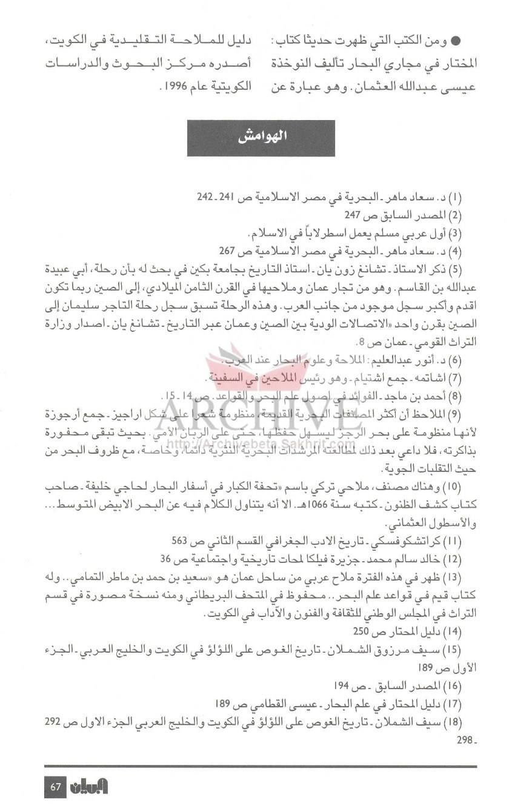

بعد ١٩٩٦ (يصف المقال كتابا صدر عام ١٩٩٦ بأنه حديث) · مقال بقلم خالد سالم محمد، مجلة البيان، ص ٦٠ و٦٤ إلى ٦٧
المصنفات الملاحية: عيسى وعبدالوهاب وصقر القطامي بين مؤلفي البحر
ما هي
عرض للمصنفات الملاحية العربية منذ القرون الإسلامية الأولى حتى اليوم. تقول الصفحة ٦٤ إن أشهر مصنف بحري كتب في هذه الفترة واشتهر في سائر منطقة الخليج العربي لعله كتاب «دليل المحتار في علم البحار» لربان الكويت «عيسى القطامي»، فباسم الكويت شق طريقه إلى عواصم وموانئ المنطقة وموانئ شرق إفريقيا والهند وباكستان. وتضيف الصفحة ٦٥ مصنفه الأصغر «المختصر الخاص للمسافر والطواش والغواص» وهو مرشد بحري لمجاري الكويت والخليج العربي، وتذكر أن النوخذة عبدالوهاب عيسى القطامي من النواخذة الكويتيين المعروفين، حاز على شهادة من الأسطول الملكي البريطاني عام ١٩٣٨، وقام بتحقيق وطبع كتاب «دليل المحتار في علم البحار» طبعة جديدة وأضاف إليه ملحقا من تأليفه باسم «الصيد والتنقل والتجارة في البحار». وتذكر الصفحة ٦٦ «ملاح الكويت الكبير عيسى القطامي» أول الكويتيين الذين ألفوا في أوزان اللؤلؤ، وتذكر كتاب «دليل البحر لهواة الصيد والتنزه» من تأليف «صقر عبدالوهاب عبدالعزيز القطامي» وهو من النواخذة الكويتيين المعاصرين. وفي الصفحة ٦٧ الهوامش ومنها: دليل المحتار في علم البحار، عيسى القطامي، ص ١٨٩.
أهميتها
يضع ثلاثة من رجال العائلة بين مؤلفي الأدب البحري العربي: عيسى عبدالوهاب، وابنه عبدالوهاب، وصقر عبدالوهاب عبدالعزيز.
صور الصفحات



المصادر
خالد سالم محمد، «المصنفات الملاحية»، مجلة البيان، ص ٦٠ و٦٤ إلى ٦٧ (أرشيف صخر)
كيف كُتب هذا النص: صفحات من أرشيف المجلات (صخر). الصفحات ٦١ إلى ٦٣ لا تذكر العائلة فلم تدرج. ولا يظهر تاريخ العدد على هذه الصفحات.
افتح في الموقع التفاعلي